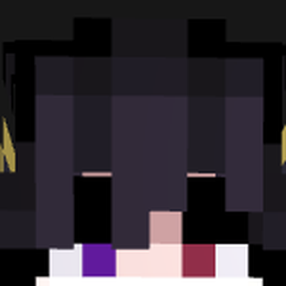
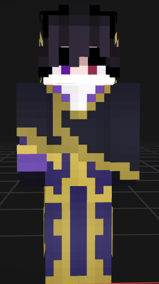

Три варианта для карточки основателя. Нажми и посмотри, как двигается; скажи номер — внедрю на сайт.

Голова скина в карточке: покачивание, свечение и искры. Для плашки основателя — самый аккуратный вариант.

Портрет парит над землёй, по карточке идут сканлайны, снизу пульсирует тень. Заметнее, но занимает больше места.
Карточка поворачивается вслед за мышью, блик скользит по поверхности. На телефоне — статично.
Исходник — рендер с тёмным фоном. Чтобы персонаж парил совсем без рамки, нужен PNG с прозрачностью или файл скина: тогда сделаю вырезку и эффект будет чище. Страница тестовая, на основном сайте её нет.
← Вернуться на сайт